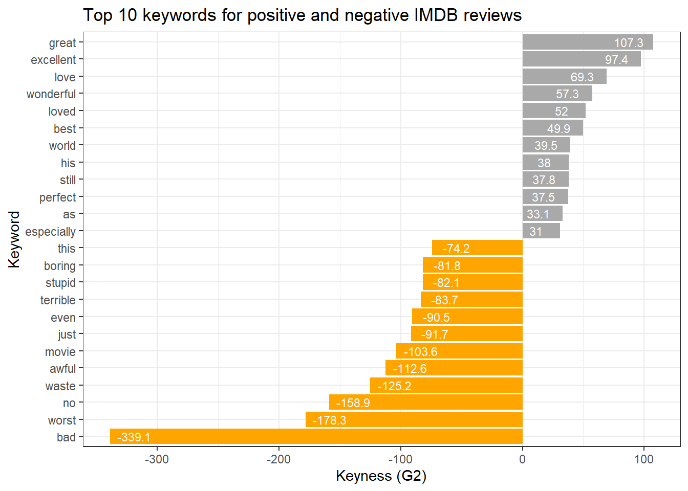

Section 6 Keyword Detection
Keywords play a crucial role in text analysis, serving as distinctive terms that hold particular significance within a given text, context, or collection. These words stand out due to their heightened frequency in a specific text or context, setting them apart from their occurrence in another. In essence, keywords are linguistic markers that encapsulate the essence or topical focus of a document or data set. The process of identifying keywords involves a methodology akin to the one employed for detecting collocations using kwics. This entails comparing the use of a particular word in corpus A, against its use in corpus B. By discerning the frequency disparities, we gain valuable insights into the salient terms that contribute significantly to the unique character and thematic emphasis of a given text or context.
6.1 Dimensions of keyness
Before we start with the practical part of this tutorial, it is important to talk about the different dimensions of keyness (see Sönning 2023).
Keyness analysis identifies typical items in a discourse domain, where typicalness traditionally relates to frequency of occurrence. The emphasis is on items used more frequently in the target corpus compared to a reference corpus. Egbert and Biber (2019) expanded this notion, highlighting two criteria for typicalness: content-distinctiveness and content-generalizability.
Content-distinctiveness refers to an item’s association with the domain and its topical relevance.
Content-generalizability pertains to an item’s widespread usage across various texts within the domain.
These criteria bridge traditional keyness approaches with broader linguistic perspectives, emphasizing both the distinctiveness and generalizability of key items within a corpus.
Following Sönning (2023), we adopt Egbert and Biber (2019) keyness criteria, distinguishing between frequency-oriented and dispersion-oriented approaches to assess keyness. These perspectives capture distinct, linguistically meaningful attributes of typicalness. We also differentiate between keyness features inherent to the target variety and those that emerge from comparing it to a reference variety. This four-way classification, detailed in the table below, links methodological choices to the linguistic meaning conveyed by quantitative measures. Typical items exhibit a sufficiently high occurrence rate to be discernible in the target variety, with discernibility measured solely within the target corpus. Key items are also distinct, being used more frequently than in reference domains of language use. While discernibility and distinctiveness both rely on frequency, they measure different aspects of typicalness.
Analysis | Frequency.oriented | Dispersion.oriented |
|---|---|---|
Target variety in isolation | Discernibility of item in the target variety | Generality across texts in the target variety |
Comparison to reference variety | Distinctiveness relative to the reference variety | Comparative generality relative to the reference variety |
The second aspect of keyness involves an item’s dispersion across texts in the target domain, indicating its widespread use. A typical item should appear evenly across various texts within the target domain, reflecting its generality. This breadth of usage can be compared to its occurrence in the reference domain, termed as comparative generality. Therefore, a key item should exhibit greater prevalence across target texts compared to those in the reference domain.
6.2 Identifying keywords
Here, we focus on a frequency-based approach that assesses distinctiveness relative to the reference variety. To identify these keywords, we can follow the procedure we have used to identify collocations using kwics - the idea is essentially identical: we compare the use of a word in a target corpus A to its use in a reference corpus.
To determine if a token is a keyword and if it occurs significantly more frequently in a target corpus compared to a reference corpus, we use the following information (that is provided by the table above):
O11 = Number of times wordx occurs in
target corpusO12 = Number of times wordx occurs in
reference corpus(withouttarget corpus)O21 = Number of times other words occur in
target corpusO22 = Number of times other words occur in
reference corpus
Example:
| target corpus | reference corpus | ||
|---|---|---|---|
| token | O11 | O12 | = R1 |
| other tokens | O21 | O22 | = R2 |
| = C1 | = C2 | = N |
We begin with loading two texts (posreviews is our target and negreviews is our reference).
As a first step, we create a frequency table of first text.
positive_words <- posreviews %>%
# remove non-word characters
stringr::str_remove_all("[^[:alpha:] ]") %>%
# convert to lower
tolower() %>%
# tokenize the corpus files
quanteda::tokens(remove_punct = T,
remove_symbols = T,
remove_numbers = T) %>%
# unlist the tokens to create a data frame
unlist() %>%
as.data.frame() %>%
# rename the column to 'token'
dplyr::rename(token = 1) %>%
# group by 'token' and count the occurrences
dplyr::group_by(token) %>%
dplyr::summarise(n = n()) %>%
# add column stating where the frequency list is 'from'
dplyr::mutate(type = "positive")
# inspect
head(positive_words)## # A tibble: 6 × 3
## token n type
## <chr> <int> <chr>
## 1 a 6462 positive
## 2 aaliyah 1 positive
## 3 aames 1 positive
## 4 aamir 1 positive
## 5 aardman 2 positive
## 6 aaron 2 positiveNow, we create a frequency table of second text.
negative_words <- negreviews %>%
# remove non-word characters
stringr::str_remove_all("[^[:alpha:] ]") %>%
# convert to lower
tolower() %>%
# tokenize the corpus files
quanteda::tokens(remove_punct = T,
remove_symbols = T,
remove_numbers = T) %>%
# unlist the tokens to create a data frame
unlist() %>%
as.data.frame() %>%
# rename the column to 'token'
dplyr::rename(token = 1) %>%
# group by 'token' and count the occurrences
dplyr::group_by(token) %>%
dplyr::summarise(n = n()) %>%
# add column stating where the frequency list is 'from'
dplyr::mutate(type = "negative")
# inspect
head(negative_words)## # A tibble: 6 × 3
## token n type
## <chr> <int> <chr>
## 1 a 6134 negative
## 2 aaargh 1 negative
## 3 aap 1 negative
## 4 aaron 2 negative
## 5 abandoned 8 negative
## 6 abandoning 1 negativeIn a next step, we combine the tables.
texts_df <- dplyr::left_join(positive_words, negative_words, by = c("token")) %>%
# rename columns and select relevant columns
dplyr::rename(positive = n.x,
negative = n.y) %>%
dplyr::select(-type.x, -type.y) %>%
# replace NA values with 0 in 'corpus' and 'kwic' columns
tidyr::replace_na(list(positive = 0, negative = 0))
# inspect
texts_df %>%
as.data.frame() %>%
head(10)## token positive negative
## 1 a 6462 6134
## 2 aaliyah 1 0
## 3 aames 1 0
## 4 aamir 1 0
## 5 aardman 2 0
## 6 aaron 2 2
## 7 aawip 1 0
## 8 ab 2 0
## 9 abandon 2 0
## 10 abandoned 4 8We now calculate the frequencies of the observed and expected frequencies as well as the row and column totals.
# Convert 'positive' and 'negative' columns to numeric
texts_df %>%
dplyr::mutate(positive = as.numeric(positive),
negative = as.numeric(negative)) %>%
# Calculate column sums for 'positive', 'negative', and their total
dplyr::mutate(C1 = sum(positive), # Total count of positive values
C2 = sum(negative), # Total count of negative values
N = C1 + C2) %>% # Total count of all values
# Process each row individually
dplyr::rowwise() %>%
# Calculate row-wise totals and other derived metrics
dplyr::mutate(R1 = positive + negative, # Row total for positive and negative
R2 = N - R1, # Total remaining count
O11 = positive, # Observed positive count
O12 = R1 - O11, # Observed negative count
O21 = C1 - O11, # Total positive minus observed positive
O22 = C2 - O12) %>% # Total negative minus observed negative
# Calculate expected counts for each cell in a contingency table
dplyr::mutate(E11 = (R1 * C1) / N, # Expected count for O11
E12 = (R1 * C2) / N, # Expected count for O12
E21 = (R2 * C1) / N, # Expected count for O21
E22 = (R2 * C2) / N) %>% # Expected count for O22
# Select all columns except for 'positive' and 'negative'
dplyr::select(-positive, -negative) -> stats_raw
# inspect
stats_raw %>%
as.data.frame() %>%
head(10) ## token C1 C2 N R1 R2 O11 O12 O21 O22
## 1 a 225776 206392 432168 12596 419572 6462 6134 219314 200258
## 2 aaliyah 225776 206392 432168 1 432167 1 0 225775 206392
## 3 aames 225776 206392 432168 1 432167 1 0 225775 206392
## 4 aamir 225776 206392 432168 1 432167 1 0 225775 206392
## 5 aardman 225776 206392 432168 2 432166 2 0 225774 206392
## 6 aaron 225776 206392 432168 4 432164 2 2 225774 206390
## 7 aawip 225776 206392 432168 1 432167 1 0 225775 206392
## 8 ab 225776 206392 432168 2 432166 2 0 225774 206392
## 9 abandon 225776 206392 432168 2 432166 2 0 225774 206392
## 10 abandoned 225776 206392 432168 12 432156 4 8 225772 206384
## E11 E12 E21 E22
## 1 6580.4837378 6015.5162622 219195.5 200376.5
## 2 0.5224265 0.4775735 225775.5 206391.5
## 3 0.5224265 0.4775735 225775.5 206391.5
## 4 0.5224265 0.4775735 225775.5 206391.5
## 5 1.0448529 0.9551471 225775.0 206391.0
## 6 2.0897059 1.9102941 225773.9 206390.1
## 7 0.5224265 0.4775735 225775.5 206391.5
## 8 1.0448529 0.9551471 225775.0 206391.0
## 9 1.0448529 0.9551471 225775.0 206391.0
## 10 6.2691176 5.7308824 225769.7 206386.3We could now calculate the keyness statistics for all words in the reviews. However, this takes a few minutes an do we will exclude tokens that occur less than 10 times.
We can now calculate the keyness measures.
stats_redux %>%
# determine number of rows
dplyr::mutate(Rws = nrow(.)) %>%
# work row-wise
dplyr::rowwise() %>%
# calculate fishers' exact test
dplyr::mutate(p = as.vector(unlist(fisher.test(matrix(c(O11, O12, O21, O22),
ncol = 2, byrow = T))[1]))) %>%
# extract descriptives
dplyr::mutate(ptw_target = O11/C1*1000,
ptw_ref = O12/C2*1000) %>%
# extract x2 statistics
dplyr::mutate(X2 = (O11-E11)^2/E11 + (O12-E12)^2/E12 + (O21-E21)^2/E21 + (O22-E22)^2/E22) %>%
# extract keyness measures
dplyr::mutate(phi = sqrt((X2 / N)),
MI = log2(O11 / E11),
t.score = (O11 - E11) / sqrt(O11),
PMI = log2( (O11 / N) / ((O11+O12) / N) *
((O11+O21) / N) ),
DeltaP = (O11 / R1) - (O21 / R2),
LogOddsRatio = log(((O11 + 0.5) * (O22 + 0.5)) / ( (O12 + 0.5) * (O21 + 0.5) )),
G2 = 2 * ((O11+ 0.001) * log((O11+ 0.001) / E11) + (O12+ 0.001) * log((O12+ 0.001) / E12) + O21 * log(O21 / E21) + O22 * log(O22 / E22)),
# traditional keyness measures
RateRatio = ((O11+ 0.001)/(C1*1000)) / ((O12+ 0.001)/(C2*1000)),
RateDifference = (O11/(C1*1000)) - (O12/(C2*1000)),
DifferenceCoefficient = RateDifference / sum((O11/(C1*1000)), (O12/(C2*1000))),
OddsRatio = ((O11 + 0.5) * (O22 + 0.5)) / ( (O12 + 0.5) * (O21 + 0.5) ),
LLR = 2 * (O11 * (log((O11 / E11)))),
RDF = abs((O11 / C1) - (O12 / C2)),
PDiff = abs(ptw_target - ptw_ref) / ((ptw_target + ptw_ref) / 2) * 100,
SignedDKL = sum(ifelse(O11 > 0, O11 * log(O11 / ((O11 + O12) / 2)), 0) - ifelse(O12 > 0, O12 * log(O12 / ((O11 + O12) / 2)), 0))) %>%
# determine Bonferroni corrected significance
dplyr::mutate(Sig_corrected = dplyr::case_when(p / Rws > .05 ~ "n.s.",
p / Rws > .01 ~ "p < .05*",
p / Rws > .001 ~ "p < .01**",
p / Rws <= .001 ~ "p < .001***",
T ~ "N.A.")) %>%
# round p-value
dplyr::mutate(p = round(p, 5),
type = ifelse(E11 > O11, "antitype", "type"),
phi = ifelse(E11 > O11, -phi, phi),
G2 = ifelse(E11 > O11, -G2, G2)) %>%
# filter out non significant results
dplyr::filter(Sig_corrected != "n.s.") %>%
# arrange by G2
dplyr::arrange(-G2) %>%
# remove superfluous columns
dplyr::select(-any_of(c("TermCoocFreq", "AllFreq", "NRows",
"R1", "R2", "C1", "C2", "E12", "E21",
"E22", "upp", "low", "op", "t.score", "z.score", "Rws"))) %>%
dplyr::relocate(any_of(c("token", "type", "Sig_corrected", "O11", "O12",
"ptw_target", "ptw_ref", "G2", "RDF", "RateRatio",
"RateDifference", "DifferenceCoefficient", "LLR", "SignedDKL",
"PDiff", "LogOddsRatio", "MI", "PMI", "phi", "X2",
"OddsRatio", "DeltaP", "p", "E11", "O21", "O22"))) -> keys
keys %>%
as.data.frame() %>%
head(10)## token type Sig_corrected O11 O12 ptw_target ptw_ref G2
## 1 great type p < .001*** 480 188 2.1260010 0.9108880 107.34903
## 2 excellent type p < .001*** 149 21 0.6599461 0.1017481 97.43274
## 3 love type p < .001*** 329 133 1.4571965 0.6444048 69.25605
## 4 wonderful type p < .001*** 122 27 0.5403586 0.1308190 57.33152
## 5 loved type p < .001*** 103 21 0.4562044 0.1017481 52.00009
## 6 best type p < .001*** 333 157 1.4749132 0.7606884 49.89776
## 7 world type p < .001*** 212 91 0.9389838 0.4409086 39.47303
## 8 his type p < .001*** 1264 884 5.5984693 4.2831117 37.98642
## 9 still type p < .001*** 275 134 1.2180214 0.6492500 37.82586
## 10 perfect type p < .001*** 95 25 0.4207710 0.1211287 37.50859
## RDF RateRatio RateDifference DifferenceCoefficient LLR
## 1 0.0012151130 2.333980 1.215113e-06 0.4001177 306.01822
## 2 0.0005581980 6.485811 5.581980e-07 0.7328374 154.19084
## 3 0.0008127917 2.261296 8.127917e-07 0.3867488 203.82465
## 4 0.0004095396 4.130462 4.095396e-07 0.6101806 109.64037
## 5 0.0003544562 4.483494 3.544562e-07 0.6352803 95.52600
## 6 0.0007142248 1.938912 7.142248e-07 0.3194777 175.16342
## 7 0.0004980752 2.129643 4.980752e-07 0.3609522 123.86079
## 8 0.0013153575 1.307103 1.315358e-06 0.1331121 300.87033
## 9 0.0005687714 1.876037 5.687714e-07 0.3046003 138.77984
## 10 0.0002996423 3.473649 2.996423e-07 0.5529478 78.97468
## SignedDKL PDiff LogOddsRatio MI PMI phi X2
## 1 282.11307 80.02354 0.8471803 0.4598864 -1.413514 0.015449817 103.15714
## 2 112.99367 146.56747 1.8500360 0.7464777 -1.126923 0.014060743 85.44156
## 3 189.77269 77.34975 0.8145226 0.4468948 -1.426505 0.012423660 66.70397
## 4 87.57706 122.03612 1.4045688 0.6482689 -1.225131 0.011018859 52.47179
## 5 75.01710 127.05606 1.4821074 0.6690043 -1.204396 0.010453774 47.22792
## 6 172.05941 63.89553 0.6611666 0.3794405 -1.493960 0.010600888 48.56653
## 7 117.61721 72.19045 0.7533356 0.4214466 -1.451954 0.009399071 38.17882
## 8 377.99898 26.62241 0.2689656 0.1717026 -1.701698 0.009342598 37.72141
## 9 138.10143 60.92006 0.6278269 0.3640309 -1.509369 0.009239335 36.89216
## 10 65.54229 110.58957 1.2309816 0.5996651 -1.273735 0.008983216 34.87516
## OddsRatio DeltaP p E11 O21 O22 N
## 1 2.333059 0.19644005 0 348.98088 225296 206204 432168
## 2 6.360048 0.35418345 0 88.81250 225627 206371 432168
## 3 2.258098 0.18989775 0 241.36103 225447 206259 432168
## 4 4.073770 0.29646770 0 77.84154 225654 206365 432168
## 5 4.402213 0.30830716 0 64.78088 225673 206371 432168
## 6 1.937051 0.15734377 0 255.98897 225443 206235 432168
## 7 2.124073 0.17736786 0 158.29522 225564 206301 432168
## 8 1.308610 0.06635773 0 1122.17204 224512 205508 432168
## 9 1.873535 0.15008722 0 213.67242 225501 206258 432168
## 10 3.424590 0.26931498 0 62.69118 225681 206367 432168The above table shows the keywords for positive IMDB reviews. The table starts with token (word type), followed by type, which indicates whether the token is a keyword in the target data (type) or a keyword in the reference data (antitype). Next is the Bonferroni corrected significance (Sig_corrected), which accounts for repeated testing. This is followed by O11, representing the observed frequency of the token, and Exp which represents the expected frequency of the token if it were distributed evenly across the target and reference data. After this, the table provides different keyness statistics (for information about these different keyness statistics see here).
6.3 Visualising keywords
We can now visualize the keyness strengths in a dot plot as shown in the code chunk below.
# sort the keys data frame in descending order based on the 'G2' column
keys %>%
dplyr::arrange(-G2) %>%
# select the top 20 rows after sorting
head(20) %>%
# create a ggplot with 'token' on the x-axis (reordered by 'G2') and 'G2' on the y-axis
ggplot(aes(x = reorder(token, G2, mean), y = G2)) +
# add a scatter plot with points representing the 'G2' values
geom_point() +
# flip the coordinates to have horizontal points
coord_flip() +
# set the theme to a basic white and black theme
theme_bw() +
# set the x-axis label to "Token" and y-axis label to "Keyness (G2)"
labs(x = "Token", y = "Keyness (G2)")Another option to visualize keyness is a bar plot as shown below.
# get top 10 keywords for text 1
top <- keys %>% dplyr::ungroup() %>% dplyr::slice_head(n = 12)
# get top 10 keywords for text 2
bot <- keys %>% dplyr::ungroup() %>% dplyr::slice_tail(n = 12)
# combine into table
rbind(top, bot) %>%
# create a ggplot
ggplot(aes(x = reorder(token, G2, mean), y = G2, label = G2, fill = type)) +
# add a bar plot using the 'phi' values
geom_bar(stat = "identity") +
# add text labels above the bars with rounded 'phi' values
geom_text(aes(y = ifelse(G2> 0, G2 - 20, G2 + 20),
label = round(G2, 1)), color = "white", size = 3) +
# flip the coordinates to have horizontal bars
coord_flip() +
# set the theme to a basic white and black theme
theme_bw() +
# remove legend
theme(legend.position = "none") +
# define colors
scale_fill_manual(values = c("orange","darkgray")) +
# set the x-axis label to "Token" and y-axis label to "Keyness (G2)"
labs(title = "Top 10 keywords for positive and negative IMDB reviews", x = "Keyword", y = "Keyness (G2)")